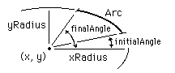

Draw.Arc
Syntax
Draw.Arc (x, y, xRadius, yRadius : int,
| |
|
initialAngle, finalAngle, Color : int) |
Description
The Draw.Arc procedure is used to draw an arc whose center is
at (x, y). This is just like Draw.Oval, except
that you must also give two angles, initialAngle and
finalAngle, which determine where to start and stop drawing.
Zero degrees is "three o'clock", 90 degrees is "twelve o'clock", etc.
The horizontal and vertical distances from the center to the arc are
given by xRadius and yRadius.

Example
This program draws a quarter circle whose center is
(midx, midy) the center of the screen, using color
number 1. The maxx and maxy functions are used to
determine the maximum x and y values on the screen.
View.Set ("graphics")
const midx := maxx div 2
const midy := maxy div 2
Draw.Arc (midx, midy, midx, midy, 0, 90, 1)
Details
The screen must be in a "graphics" mode. See the View.Set procedure for details. If the screen is not in a "graphics" mode, an error will occur
Status
Exported qualified.
This means that you can only call the function by calling
Draw.Arc, not by calling Arc.
See also
View.Set,
maxx,
maxy and the various procedures in
the Draw unit.